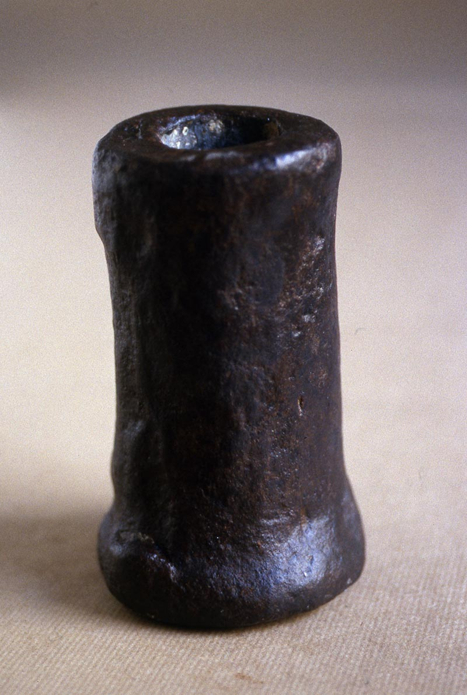
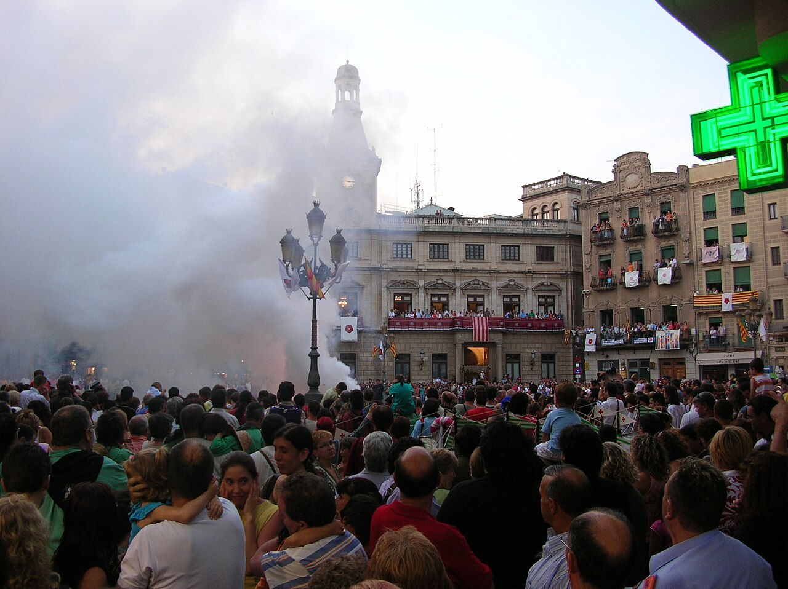
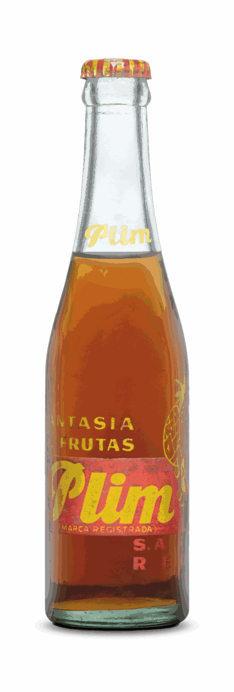
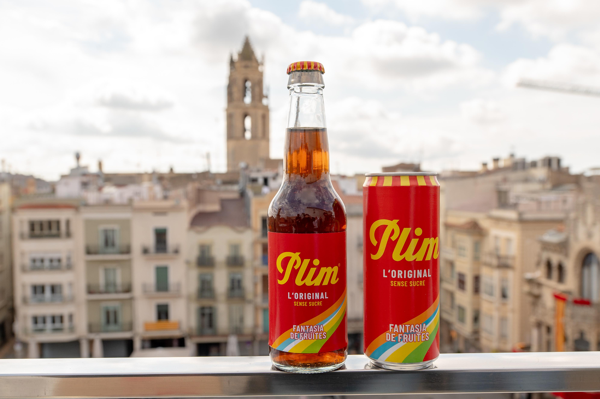
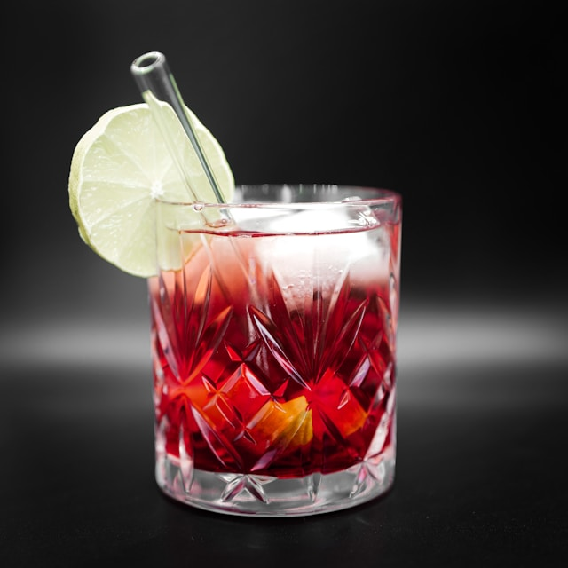
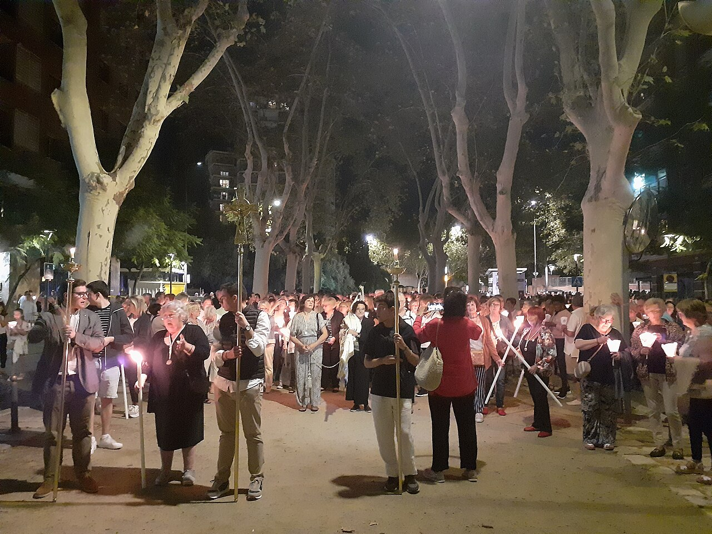
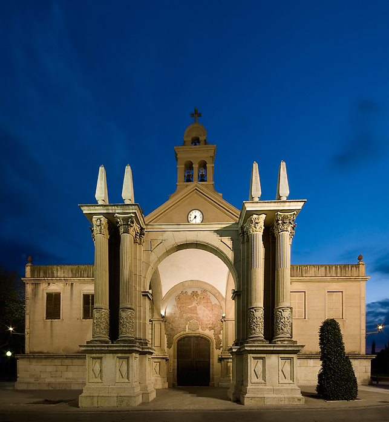
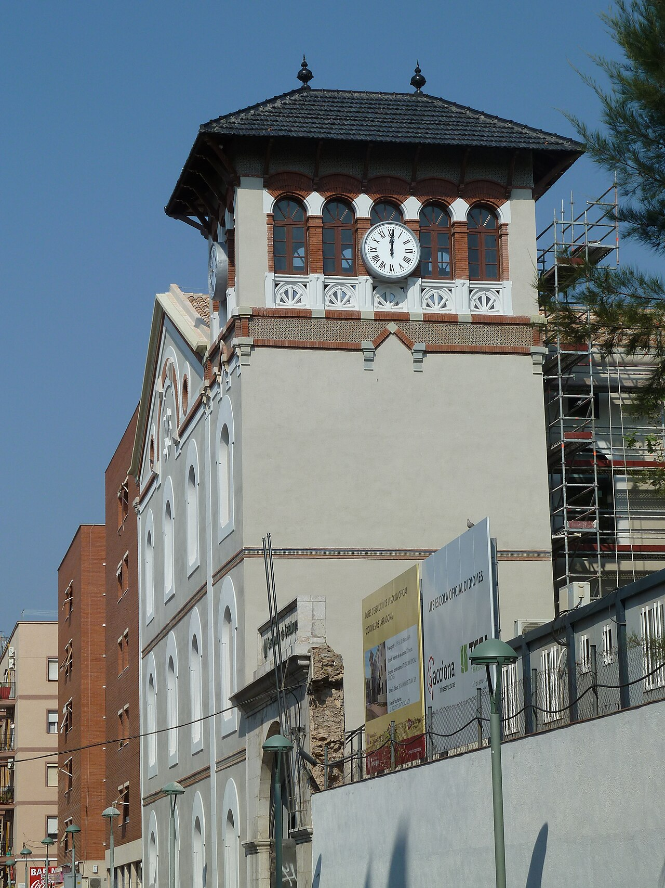

El jueves a las ocho y media, en el Mercadal
El jueves 24 de septiembre, a las 20.30 h, sale de la plaça del Mercadal la Cercavila del Masclet: Galanes, plaça de Catalunya, raval de Santa Anna, Llovera y plaça de la Llibertat. El Col·lectiu El Masclet lanza botes al principio y al final del recorrido, el reparto es solo para mayores de edad, y al día siguiente, el 25, Reus celebra a su patrona. Es la víspera de Misericòrdia y la ciudad entera bebe lo mismo.
La receta cabe en una línea: vermut negro de Reus y Plim a partes iguales. Nada más. Y sin embargo, detrás de esas dos mitades hay cuatro siglos de pólvora, una fábrica de refrescos de 1858, un pleito que mató una marca y una recuperación que se ha completado este mismo año.
Se llama como los morteros que revientan en la plaza
El masclet no toma el nombre de los petardos valencianos, sino de los mascles o morteros de la Tronada, el acto más reconocible de la fiesta reusense. Sobre el pavimento de la plaça del Mercadal se traza un reguero de pólvora y se colocan alrededor de treinta piezas de hierro a distancias regulares; cuando la pólvora corre, los mascles van disparando uno tras otro hasta el estallido final concentrado.
Las referencias documentales más antiguas de la tronada en Reus se remontan a 1677. La Festa Major de Sant Pere, de la que es el acto central, fue declarada Festa Patrimonial d'Interès Nacional en 2010. Ponerle a una bebida el nombre de ese estruendo no fue una ocurrencia publicitaria: era la manera más directa de decir «esto es de aquí».


El Plim: 1928, un pleito y una resurrección
El Plim —«fantasía de frutas»— nació en Reus en 1928 dentro de la fábrica Gili, fundada en 1858 por Joan Gili i Boloix y convertida con los años en una de las casas de refrescos más fuertes de la provincia. El nombre salió de una discusión entre socios: cuando alguien preguntó cómo llamarla, otro respondió «a mí, plim». Se quedó.

La botella de siempre: «fantasía de frutas», marca registrada, con la piña dibujada en el vidrio. Imagen: Plim.
La fórmula fue cambiando: más dulce, más seca, con más o menos gas. En los años noventa se suavizó precisamente para que ligara mejor con el vermut, señal de que la mezcla ya se hacía en las casas mucho antes de tener nombre propio. En 1995 la marca llegó a sacar siete variedades —café, bíter sin alcohol, tónica, cola, naranja, limón y agua con gas— que la competencia global se acabó llevando por delante.
En 2014 el Plim desapareció. No por falta de clientes, sino por un conflicto judicial entre su propietario, Matias Olesti, y la empresa que lo fabricaba, que dejó de pagar los cánones acordados. La ciudad respondió con un #SalvemPlim que llegó hasta el Ayuntamiento. La marca tardó once años en volver: desde abril de 2025 la produce ReusPlim S.L., fruto de la alianza entre Olesti y el enólogo Gerard Llauradó, con zumo de limón ecológico, sin azúcar y en vidrio y lata. La Festa Major de Sant Pere de este año fue la primera que se bebió con el Plim recuperado.

El Plim recuperado, en vidrio y en lata, presentado en abril de 2025 sobre los tejados de Reus. Imagen: Ajuntament de Reus.
El vermut que ya tenía la ciudad ganada
La otra mitad no necesitaba presentación. Reus llegó a tener más de treinta elaboradores de vermut y más de cincuenta marcas entre finales del XIX y principios del XX, y esa cultura del aperitivo nunca se fue del todo. En el masclet se usa vermut negro; en el concurso de la fiesta, la casa que pone la base es Vermuts Miró, junto con el propio Plim y el Menjablanc de Reus como establecimientos colaboradores.
Cómo se prepara · La versión de barra y la de casa
Vaso alto, hielo, mitad de vermut negro y mitad de Plim. Se remueve poco: el gas del refresco hace el trabajo. Frío de nevera, no aguado. En el Concurs de Masclet, que este año celebró su vigésima primera edición el 12 de septiembre en la plaça de Prim, cada establecimiento añade un tercer ingrediente a esa base y el público elige el mejor por votación popular. Ahí es donde aparecen los cítricos, las hierbas y alguna que otra herejía.

Imagen de recurso: vaso, hielo y poco más. El masclet no necesita coctelera ni adornos. Foto: Jonas Allert · Unsplash.
Una bebida inventada por una orquesta
La Cercavila del Masclet arrancó en 2001, en Misericòrdia, por iniciativa de la orquesta reusense La Padrina. La idea era doble: dar más contenido musical y más presencia joven a la fiesta, y de paso tener una bebida propia con la que identificarse. Funcionó tan bien que acabó exportándose también a la Festa Major de Sant Pere, en junio. Hoy la organiza el Col·lectiu El Masclet.
Vale la pena fijarse en el detalle: no lo decidió una marca ni una campaña municipal, sino unos músicos que querían llenar la calle. Veinticinco años después, el masclet es lo que se pide en la barra sin tener que explicar qué lleva. A cuarenta minutos de allí, en Tarragona, ocurrió algo parecido con la mamadeta de Santa Tecla, nacida en 1994 entre amigos del Ball de Diables. Dos ciudades, la misma intuición: una fiesta necesita su vaso.


Por qué Reus se para el 25 de septiembre
La fiesta que acompaña al masclet viene de lejos. Cuenta la tradición que en 1592, con la peste rondando la ciudad, la Virgen se apareció a una pastora, Isabel Besora, la Pastoreta, y le confió lo que Reus debía hacer para librarse del contagio. En el lugar de la aparición se levantó la ermita —proyecto de Damià Pallarés, terminada hacia 1602— que hoy es el santuario de Misericòrdia, y la Virgen quedó como patrona de la ciudad. Desde entonces, el 25 de septiembre es su día.
Alrededor de esa fecha se ordena todo lo demás: el Seguici Petit el 23, el Seguici Festiu y la Cercavila del Masclet el 24, y el 25 las misas de primera hora, la solemne de las once, la bajada del seguici y la del Ball de Diables. Los gigantes, los castells y el correfoc completan una semana larga que empieza mucho antes en el calendario real de la ciudad.
Y nosotros tambiénUna copa que explica una ciudad
En una asociación gastronómica se habla mucho de producto y de técnica, y menos de por qué en un sitio se bebe una cosa y no otra. El masclet es un buen recordatorio: dos productos locales, una fecha, una calle llena y una tradición de veinticinco años que ya funciona como si tuviera doscientos. Si estos días pasas por Reus, el jueves a las ocho y media sabes dónde hay que estar.
Fuentes consultadas: Ajuntament de Reus y programa de las Festes de Misericòrdia 2026, Reus Cultura, Canal Reus, Plim (plim.cat), Patrimoni Festiu de la Generalitat, Museu de Reus, Viquipèdia (Masclet, Plim, Tronada). Imágenes: Sergi Esteve (CC BY-SA 3.0), Jordi Gili (CC BY-SA 4.0) y Aitor Escauriaza (CC BY 2.0), vía Wikimedia Commons; Plim; Ajuntament de Reus; Jonas Allert (Unsplash).
Newsletter
¿Quieres recibir la próxima crónica antes que nadie?
Crónicas de los restaurantes visitados, vinos recomendados y novedades del Camp de Tarragona. Cada quince días, sin ruido.
Sin spam · Date de baja cuando quieras.
Más bebida y más fiesta en el Camp

CuriosidadesChartreuse de Tarragona · 86 años destilando un secreto
La mamadeta de Santa Tecla viene de una fórmula de 1605 y de unos monjes franceses que destilaron en el Barri del Port hasta 1989.
Leer → Curiosidades
Curiosidades
Reus, París, Londres · La capital mundial del vermut
Treinta elaboradores, cincuenta marcas y la cultura del aperitivo que explica por qué la mitad del masclet es vermut.
Leer →